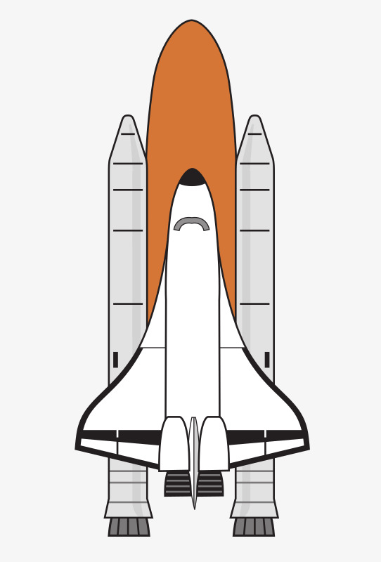

<div class="container p-5"
     [ngClass]="styles"
     style="border: 1px solid #e1e1e1; border-radius: 5px">
  <div class="row">
    <a class="col-sm-1" href="#"
       (click)="fast = !fast; $event.preventDefault()">
      
      
    </a>
    <div class="col-sm-11">
      <form class="mb-3">
        <div class="input-group">
            <input [(ngModel)]="pattern"
                  [matAutocomplete]="auto"
                  [formControl] = "myControl"
                  matInput
                  (focus)="advencedSearch = false"
                  type="text"
                  class="form-control"
                  name="recherche"
                  placeholder="recherche ..."
                  style="border-radius: 0px">
            <mat-autocomplete #auto="matAutocomplete">
              <mat-option *ngFor="let option of (options$ | async | searchFilter:pattern)" [value]="option">{{option}}</mat-option>
            </mat-autocomplete>
            <div class="input-group-append">
              <button type="submit"
                      class="btn btn-outline-secondary"
                      style="border-radius: 0px"
                      [routerLink]="['/search']" [queryParams]="{ pattern: pattern, fast: fast }">
                Rechercher
              </button>
            </div>
        </div>
      </form>

      <a class="blockquote-footer" href="" (click)="$event.preventDefault();
                    advencedSearch = !advencedSearch">Recherche avancée
        <i class="fa" [ngClass]="{'fa-minus': advencedSearch, 'fa-plus': !advencedSearch}"></i>
      </a>

      <div class="d-flex justify-content-center">
        <form style="width: 70%">
          <div *ngIf="advencedSearch"
               class="input-group mt-3">
                  <input [(ngModel)]="advencedInput"
                          [matAutocomplete]="auto"
                          [formControl] = "myControl"
                          matInput
                          class="form-control"
                          style="border-radius: 0px"
                          name="rechercheAvancee"
                          placeholder="Entrez une expression reguliere">
                  <mat-autocomplete #auto="matAutocomplete">
                    <mat-option *ngFor="let option of (options$ | async |searchFilter:advencedInput)" [value]="option">{{option}}</mat-option>
                  </mat-autocomplete>
                  <div class="input-group-append">
                    <button type="submit"
                            class="btn btn-outline-secondary"
                            style="border-radius: 0px"
                            [routerLink]="['/search']" [queryParams]="{ pattern: advencedInput, advenced: true, fast: fast }">
                      Rechercher
                    </button>
                  </div>
          </div>
        </form>
      </div>
    </div>
  </div>
</div>
